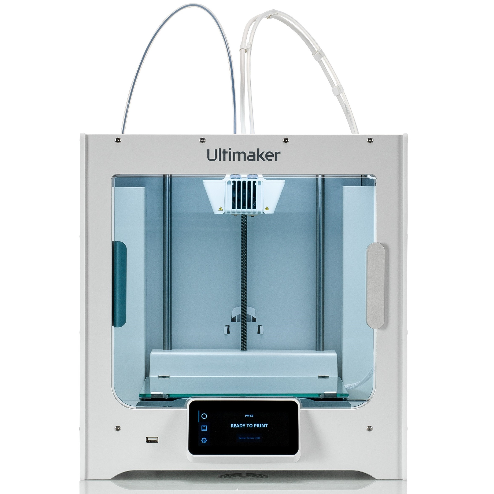

- Build volume: 330 x 240 x 300 mm (13 x 9.4 x 11.8 inches)
- Materials:(2.85mm dia) PLA, ABS, Nylon, TPU, UM CPE+
- Resolution: Down to 20 micron (0.001 inch)
- Interface: 4.7-inch touchscreen
- Layer resolution: Upto 20 micron
- XYZ resolution: 6.9, 6.9, 2.5 micron
- Display/input: 4.7-inch (11.9 cm) color touchscreen
- Princore/nozzle: Swappable print cores
- Printehead: Dual extrusion print head with an auto-nozzle lifting system and swappable print core
- Nozzle dia: 0.25 mm, 0.4 mm, 0.6 mm, 0.8 mm